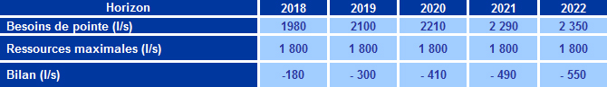

Espace Technique
Eau Potable
Besoins en eau actuels et futurs
Besoins en Eau actuels
Durant l’année 2017, les besoins de la Régie en eau s’élèvent à 1 449 l/s
Besoins en Eau futurs
Pour satisfaire la demande en eau potable du Grand Agadir à moyen et à long terme, l’ONEE/Branche Eau a entamé un projet d’envergure du complexe hydraulique My Abdellah qui consiste à réaliser un système d’adduction avec une capacité de production de 1400 l/s. La première tranche de ce projet est mise en service depuis 2007 avec une capacité de production de l’ordre de 750 l/s.
Par ailleurs, et afin de satisfaire les besoins à moyen et à long terme, l’ONEE/Branche Eau a programmé au nord d’Agadir la réalisation d’une station de dessalement d’eau de mer pour un débit de 1m3/s. La mise en service de cette station a été prévue initialement en 2017, mais les travaux sont en arrêt et le site de la station a été transféré au Sud d’Agadir dans le même site de la station de dessalement pour l’agriculture et la date de mise en service est reportée à 2020. L’ONEE/Branche Eau devra mettre en place des actions pour pallier à un éventuel déficit en procédant notamment au renforcement des installations existantes et à la création de nouveaux forages.
© RAMSA
Realisation 2019